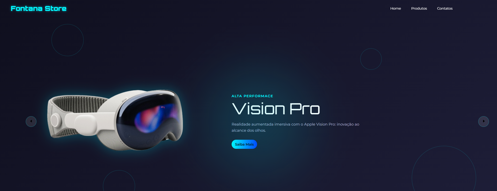
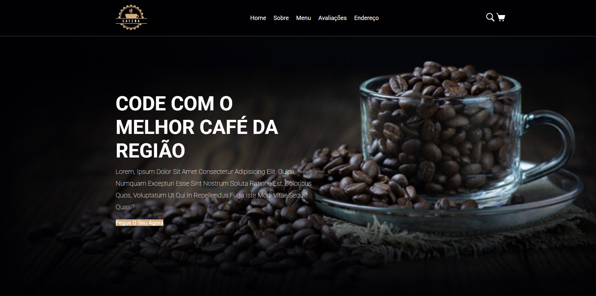
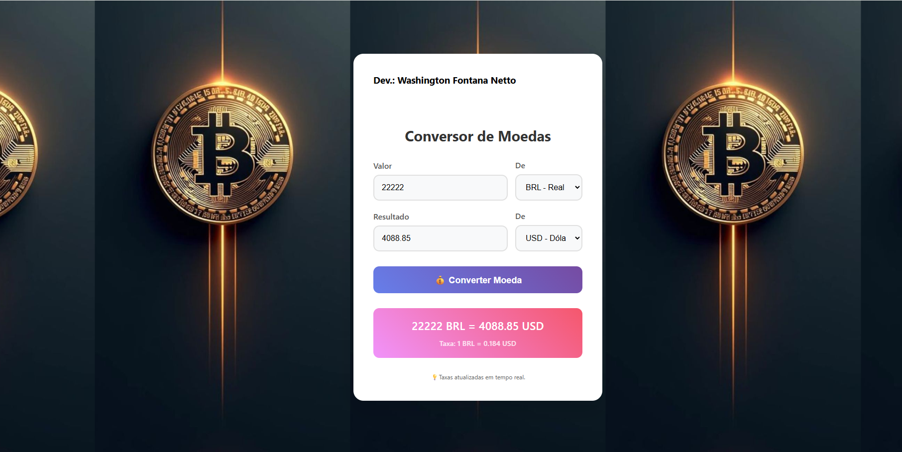
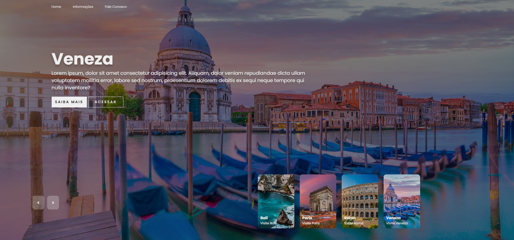
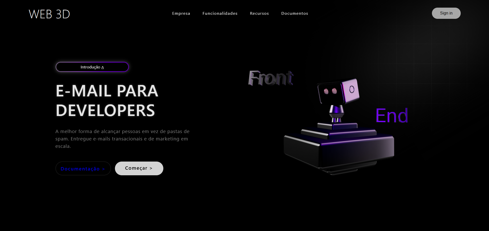

Front-end com critério
Construo páginas responsivas com HTML semântico, CSS organizado e JavaScript direto ao ponto, priorizando carregamento rápido e manutenção simples.
Desenvolvedor Front-End | HTML | CSS | JavaScript | TypeScript | React | Analista de Sistemas | MySQL | AWS
Sou Washington Fontana Netto, desenvolvedor Front-End com base em HTML, CSS, JavaScript, TypeScript e React. Minha formação jurídica adiciona precisão documental, leitura analítica e rigor processual ao desenvolvimento de produtos digitais.
Resposta direta pelo WhatsApp para projetos, parcerias e oportunidades de estágio/júnior.
Proposta de valor
Construo páginas responsivas com HTML semântico, CSS organizado e JavaScript direto ao ponto, priorizando carregamento rápido e manutenção simples.
A experiência em Serviços Jurídicos, Cartorários e Notariais fortalece minha atenção a requisitos, documentação, rastreabilidade e precisão.
Avanço em Python, Django, APIs REST e automação para conectar interfaces a fluxos completos de produto.
Stack atual
Sobre mim
Tenho 28 anos e resido em Juiz de Fora-MG. Atualmente, estou cursando o curso Superior de Tecnologia em Análise e Desenvolvimento de Sistemas pela Uninter e atuo como desenvolvedor Front-End freelancer, criando interfaces funcionais e modernas enquanto aprimoro continuamente minhas competências técnicas.
Sou altamente dedicado ao meu desenvolvimento profissional. Por isso, estou realizando a formação completa em Front-End pela Udemy Academy, onde aprofundo meus conhecimentos em HTML, CSS, JavaScript, TypeScript e React, ampliando minha capacidade de construir projetos e soluções eficientes e escaláveis.
Complemento minha formação com cursos oferecidos pela instituição Alura, em parceria com a instituição Santander Open Academy, nas áreas de redes de computadores, linguagens de programação, Power BI, Git/GitHub e UX Design — habilidades que fortalecem minha visão sistêmica dos projetos e meu entendimento de todo o ciclo de desenvolvimento.
Meu maior objetivo é me tornar um desenvolvedor Full Stack. Para isso, avanço também na trilha Back-End por meio da instituição PycodeBR, estudando o framework Django, a linguagem Python, criação de APIs modernas e automação de sistemas, o que amplia minha capacidade de atuar de ponta a ponta no desenvolvimento de aplicações.
Além da formação em Análise e Desenvolvimento de Sistemas, sou graduado em Serviços Jurídicos, Cartorários e Notariais pela instituição Unopar/Anhanguera. Essa bagagem me proporciona uma visão analítica diferenciada e capacidade de lidar com documentações técnicas e processuais de alta complexidade — um diferencial valioso em ambientes corporativos que exigem precisão e responsabilidade.
Sou movido pela busca constante por conhecimento e pela construção de soluções tecnológicas que gerem impacto real. Estou preparado para enfrentar novos desafios e evoluir profissionalmente em direção ao Full Stack, sempre com foco em excelência, produtividade e inovação.
Projetos em destaque

Vitrine responsiva para produtos Apple e tecnologia, com apelo visual direto e navegação orientada à descoberta de produtos.

Landing page para cafeteria com seções comerciais claras, hierarquia visual forte e experiência consistente no mobile.

Interface de utilidade prática para conversão de moedas, reforçando manipulação de formulário e lógica com JavaScript.

Experiência visual para explorar destinos, com composição de cards, imagens grandes e navegação pensada para descoberta.

Landing visual com elemento 3D, adequada para demonstrar repertório estético e construção de páginas de alto impacto.
Social proof
Tecnologia em Análise e Desenvolvimento de Sistemas pela Uninter, com aplicação prática em projetos web.
Formação Udemy Academy em HTML, CSS, JavaScript, TypeScript e React para consolidar base moderna de interfaces.
Trilha PycodeBR com Python, Django, APIs REST e automação para ampliar atuação Full Stack.
Redes, Power BI, Git/GitHub e UX Design por Alura e Santander Open Academy.
Vamos conversar?
O formulário valida os dados no navegador e abre uma mensagem pronta no WhatsApp para acelerar o primeiro contato.